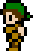
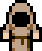

Functional programming made simple |
||||
Minimal instead of feature rich |
 |
Programmable json |
||
Easy to understand, for both humans & computers |
Suitable for data & calculations, but not interactive programs with side effects |
|||
Functional & imperative & generic programming |
Manglang is an experimental programming language that is simple and minimal. It is suitable for describing data and calculations, but not interactive programs with side effects. Manglang code can either be evaluated using its stand-alone interpreter or be embedded as a scripting language within C++.
Manglang is a functional and interpreted language. It takes source code written in Manglang and evaluates it. Consider the following input program:
{
rectangles = [
{width = 3 height = 1}
{width = 6 height = 2}
{width = 3 height = 6}
{width = 8 height = 4}
]
get_area = in {width height}
out mul!(width height)
areas = map!(get_area rectangles)
total_area = add!areas
num_rectangles = count!rectangles
average_area = div!(total_area num_rectangles)
}
When we evaluate the input above we get the output below:
{
rectangles = [
{width = 3 height = 1}
{width = 6 height = 2}
{width = 3 height = 6}
{width = 8 height = 4}
]
get_area = in {width height}
out mul!(width height)
areas = [3 12 18 32]
total_area = 65
num_rectangles = 4
average_area = 16.25
}
Note that both the input and output of the Manglang interpreter is given as Manglang code! The Manglang format can be used to both write programs and to express pure data. It can for instance be used as a programmable configuration language.
For more code examples continue reading below, or look inside the standard library. There is also documentation for all functions.
Manglang consists of the following basic building blocks:
| Atoms like numbers and characters and booleans. | |
| Containers holding data like dictionaries, tuples , stacks, strings and tables. | |
| Control flow like if, is, while and for. | |
| Function definitions and function applications which transform data. |
Below you will find descriptions and examples of each of these language constructs.
Manglang has three kinds of atomic or primitive data: numbers, characters and booleans.
Manglang has a single number type which is a 64 bit float:
12.34
A single ascii character is written as:
'a'
A boolean is either:
yesor
noIn Manglang we see booleans as answers to questions and therefore write them as
yes and no instead of true and false. This is closer to natural language and also shorter.
Manglang has five different kinds of containers which can store other data inside them: dictionaries, tuples, stacks, strings, tables.
Dictionaries are used to associate names / symbols with expressions:
{pi=3.14 first_letter='A'}
Manglang doesn't care about extra whitespace so the program above can also be written as:
{
pi = 1
first_letter = 'A'
}
Dictionaries can be nested:
{
rectangle = {width = 4 height = 5}
circle = {radius = 5}
}
A name defined in a dictionary can be referenced after it is defined:
{
a = 1
b = a
}
The input above is evaluated to the output below:
{
a = 1
b = 1
}
Dictionaries can be nested. You can also refer to a name in an outer dictionary:
{
a = 1
b = {c = 2 d = a}
}
The input above is evaluated to the output below:
{
a = 1
b = {c = 2 d = 1}
}
When refering to a name the current dictionary is first checked and then the next outer dictionary and so on.
You can refer to names in an inner dictionary like this:
{
a = {b=2 c=3}
d = b@a
}
The input above is evaluated to the output below:
{
a = {b=2 c=3}
d = 2
}
The syntax name@dictionary is used to get the value corresponding to the name/key inside the dictionary.
This syntax is reversed compared to most languages that instead write this as dictionary.name.
However, having it like this simplifies the syntax of Manglang and makes it easier to parse.
It also makes both function application and dictionary lookup follow the same order and pattern.
In Manglang dictionaries are the only way to associate names / symbols with expressions. So Manglang uses dictionaries to represent both:
Tuples of values are written as:
(3 17.5 yes 'A')
We use tuples to group different atomics as an ordered collection. The elements of the tuple can have different types, just as the elements of a dictionary can have different types. To see the similarity consider this example:
{
tuple = (3 17.5 yes 'A')
dictionary = {item0=3 item1=17.5 item2=yes item3='A'}
}
These are two different ways of storing the same data.
Tuples in Manglang can be seen as syntactic sugar sprinkled on dictionaries so that we can use the first more concise notation instead of the second more verbose notation.
Conceptually we can think of a tuple as a dictionary but instead of accessing an item in it using name@dictionary we access it with and index like tuple!index. A common use case for tuples is to send multiple inputs of different types to a function.
Stacks of values are written as:
[3 6 4]There are two differences between tuples and stacks:
If we have a stack we can get the stack with all elements except the first via drop!stack. The function put is used to construct a new stack by putting a new item on top of the stack:
put!(7 [4 5 2])The input above is evaluated to the output below:
[7 4 5 2]
Here is another example program with some stack operations:
{
a = [3 6 4]
b = take!a
c = drop!a
d = put!(b c)
}
The input above is evaluated to the output below:
{
a = [3 6 4]
b = 3
c = [6 4]
d = [3 6 4]
}
In summary, we interact with stacks by accessing its members using take and drop and via the function put. The standard library of Manglang provides more functions that works on stacks but they are all built on top of this basic interface.
Strings are written as:
"Manglang"
They can be seen as stacks of characters. Example of a program using functions on strings:
{
a = "Manglang"
b = take!a
c = drop!a
d = reverse!a
e = put!('E' a)
}
The input above is evaluated to the output below:
{
a = "Manglang"
b = 'M'
c = "anglang"
d = "gnalgnaM"
e = "EManglang"
}
What we call Tables in Manglang are sometimes referred to as associative arrays in other languages. A table holds pairs of elements: keys and values. We use the syntax:
<key1:value1 key2:value2>Tables are used for situations where you want to quickly get or put the value in a container based on a dynamic key. We do this using the built-infunctions
get!(key table default_value) and put!((key value) table). The following example takes a stack of numbers and computes a table, where each key is a number and the corresponding value counts how many times the number occurs in the stack:
{
stack = [1 2 1 1 3 4 2]
counts = <>
while stack
x = get!(take!stack counts 0)
counts = put!((take!stack inc!x) counts)
stack = drop!stack
end
}
The input above is evaluated to the output below:
{
stack = []
counts = <1:3 2:2 4:1>
x = 2
}
Tables are perhaps the most complicated and least used container in Manglang. But they are handy in some cases.
Tables are somewhat similar to dictionaries, but also different:
-----------+---------------+---------+------------------------------------------- Container | Item Type | Size | Mutability -----------+---------------+---------+------------------------------------------- Dictionary | Heterogeneous | Static | Mutable during constrution, then immutable Tuple | Heterogeneous | Static | Immutable Stack | Homogeneous | Dynamic | Immutable String | Homogeneous | Dynamic | Immutable Table | Homogeneous | Dynamic | Mutable -----------+---------------+---------+-------------------------------------------
Dictionaries and tuples are both heterogeneous and static containers. They are used when we know exactly how many items we want to store in the container. We use dictionaries if we want to refer to each item by name. We use tuples if we want to refer to each item by position. By heterogeneous we mean that the items in a container can have different type.
Stacks, strings and tables are all homogeneous and dynamic containers. By homogeneous we mean that each item in a container has the same type. By dynamic we mean that they are suitable for adding and removing items as the program is evaluated. Stacks and strings are immutable, which means that if we add or remove items we get a new copy of the original container with the updated change, whereas the original container is not modified. Tables on the other hand are mutable, so putting new items in a table actually modifies the original container.
Stacks, strings, tables share some basic operations. The following operations can be used to iterate through these dynamic containers:
take!containerdrop!containerif container then ... else ... can be used to check that the container is not empty. Can be seen as checking whether the iterator has a successor or not.container!index can be used to get the item at the specified index. The container is interpreted as a function which takes an index as input and outputs an item.Stacks, strings, tables also share the following operations for creating new containers:
put!(item container)clear!container
The expression if a then b else c is evaluated to b or c depending on if the answer to the question a is yes or no.
no or falsey:
no0[]"" <> yes or truthy.
{
a = [0 1]
b = if a then
take!a
else
2
c = if b then "hello" else "world"
}
This program is evaluated to:
{
a = [0 1]
b = 0
c = "world"
}
The is operator is used to check for equality among many alternatives. It is similar to switch-case or pattern matching in other languages. Consider this example where we use the is operator to find the corresponding characters:
{
opening = '{'
closing = is opening
'(' then ')'
'[' then ']'
'{' then '}'
'<' then '>'
else '.'
}
The input above is evaluated to the output below:
{
opening = '{'
closing = '}'
}
The is operator can be seen as syntactic sugar for a more verbose combination of the if operator and the equal function:
{
opening = '{'
closing = if equal?(opening '(') then ')'
else if equal?(opening '{') then '}'
else if equal?(opening '[') then ']'
else if equal?(opening '<') then '>'
else '.'
}
In Manglang you can loop while constructing a dictionary:
{
x = 10
tot = 0
while x
tot = add!(tot x)
x = dec!x
end
}
The input above is evaluated to the output below:
{
x = 0
tot = 55
}
The loop decrements x until it is zero and then finishes. Definitions in a dictionary can only be updated / mutated while the dictionary is constructed. Once it has been constructed it is immutable and cannot be updated.
You can use a for-each-loop to visit each item in a container:
{
tot = 0
numbers = [1 2 3]
for number in numbers
tot = add!(tot number)
end
}
This is syntactic sugar for the equivalent while loop:
{
tot = 0
numbers = [1 2 3]
while numbers
number = take!number
tot = add!(tot number)
numbers = drop!number
end
}
Both versions above evaluate to the output below:
{
tot=6
numbers=[]
number=3
}
There are two things to note about for-loops in Manglang. The first thing is that in the expression for item in name both item and name are names. This means that a container needs to first be given a name before it can be used in a for-loop. The container CANNOT be inlined directly like for item in [1 2 3]. Another thing to note is that the for loop rebinds these names for each iteration of the loop and leave them in their final state after the loop. So in this sense a for-loop consumes the name of the container. If you want to refer to the full container also after the loop then you need to assign a different name to it before entering the for-loop.
We have already seen some examples of calling / applying functions in Manglang.
A function is called using ! like function_name!input.
We see function application as a command and hence use the symbol ! after the verb that names the functions.
Functions take a single value as input.
However, this single value can be a stack or tuple or dictionary, that has multiple values inside.
{
stack = [4 2 1]
sum0 = sum!stack
sum1 = sum![4 2 1]
stack2 = put!(3 stack)
}
This program is evaluated to:
{
stack = [4 2 1]
sum0 = 7
sum1 = 7
stack2 = [3 4 2 1]
}
Manglang does not have any special operators for arithmetics, boolean, stack operations etc. Instead functions are used for all computations. Function calls can be nested like this:
mul!(add!(1 2) sub!(7 2))
This program is evaluated to (1+2)*(7-2) = 3*5 = 15.
Function calls are right associative.
Manglang does not support currying.
? instead of ! for applying functions that return a boolean value, a.k.a. predicates. Applying such a function is like asking a question. As an example consider the following functions from the standard library that operate on ascii characters:
{
is_upper = in c out less_or_equal?[65 number!c 90]
is_lower = in c out less_or_equal?[97 number!c 122]
to_upper = in c out
if is_lower?c then
character!sub!(number!c 32)
else
c
to_lower = in c out
if is_upper?c then
character!add!(number!c 32)
else
c
}
Functions are defined using they keywords in and out like this:
{
square = in x out mul!(x x)
result = square!3
}
A function definition is on the form in x out expression
where x is the name of the input and expression is the output.
Functions are first class values and can be given a name by putting them inside a dictionary.
Here are some examples of defining and calling functions:
{
square = in x out mul!(x x)
inc = in x out add!(x 1)
dec = in x out sub!(x 1)
count = in stack
out
if stack then
inc!count!drop!stack
else
0
a = square!3
b = inc!3
c = dec!3
d = count![3 7 3 8 2]
e = count!"apple"
}
This program is evaluated to:
{
square = in x out mul!(x x)
inc = in x out add!(x 1)
dec = in x out sub!(x 1)
count = in stack
out
if stack then
inc!count!drop!stack
else
0
a = 9
b = 4
c = 2
d = 5
e = 5
}
The if-then-else operator is used to choose what value to return based on a condition.
Functions can be recursive like the count example above.
Function definitions and computations can be broken up into smaller parts by using dictionaries:
{
square = in x out mul!(x x)
square_norm = in vec3 out result@{
x = vec3!0
y = vec3!1
z = vec3!2
result = add!(square!x square!y square!z)
}
vector = (3 4 5)
result = square_norm!vector
}
Manglang provides syntactic sugar for defining functions that take multiple input, in the form of a tuple. Here are some examples of equivalent ways of defining and calling functions:
{
area1 = in rectangle out mul!(rectangle!0 rectangle!1)
area2 = in (width height) out mul!(width height)
rectangle = (5 4)
a = area1!rectangle,
b = area2!rectangle,
c = area1!(5 4)
d = area2!(5 4)
}
The functions area1 and area2 are equivalent.
They expect the same input and return the same result.
area2 just uses syntactic sugar to make its implementation more concise,
by unpacking the elements of the input tuple.
Manglang provides syntactic sugar for defining functions that take multiple input, in the form of a dictionary with named entries. Here are some examples of equivalent ways of defining and calling functions:
{
area1 = in rectangle out mul!(width@rectangle height@rectangle)
area2 = in {width height} out mul!(width height)
rectangle = {width = 5 height = 4}
a = area1!rectangle
b = area2!rectangle
c = area1!{width = 5 height = 4}
d = area2!{width = 5 height = 4}
}
The functions area1 and area2 are equivalent.
They expect the same input and return the same result.
area2 just uses syntactic sugar to make it its implementation more concise,
by unpacking the elements of the input dictionary.
For more code examples look inside the standard library.
Description of all functions that come with Manglang.
git clone git@github.com:mabur/mang_lang.gitmkdir mang_lang/src/buildcd mang_lang/src/buildcmake -DCMAKE_BUILD_TYPE=Release ..make./tests./manglang ../../examples/hello_world.txtgit clone git@github.com:mabur/mang_lang.gitmang_lang/src/CMakeLists.txt in CLion and build.git clone git@github.com:mabur/mang_lang.gitmang_lang/src/CMakeLists.txt in CMake and generate a Visual Studio project.git clone git@github.com:mabur/mang_lang.gitmang_lang/src/ to it and.src/mang_lang.h and using the function std::string evaluate(std::string code);